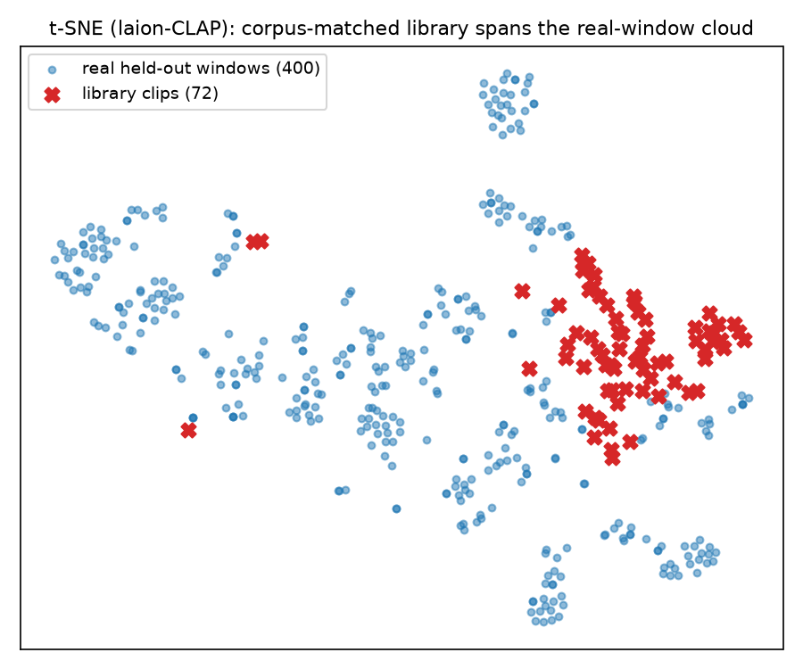

PromptMix-EEG
Brain (EEG) → frozen MusicGen, via mixture weights over a fixed library of native text prompts.
Musicality is guaranteed by construction: every clip is a sample of the untouched generator under one of its own prompts — the EEG only decides which genre to play and how much to blend.
two decoupled partsno generator weights touched
32 kHz68 subjects · 14 songs
The two parts
84.9%
Part 1 — Alignment: EEG → laion-CLAP bridge → retrieve the song the subject heard (14-way, held-out subjects; chance 7.1%). In a hard pool of 4,146 candidate songs it still hits 26.6% top-1 = 1103× chance.
κ 0.55
Part 2 — Generation: a 134K-param projection layer maps EEG → mixture weights over 12 genre prompts → frozen MusicGen. EEG predicts the heard song's genre at Cohen's κ 0.551 [0.528, 0.574] (chance 0). Output is pleasant by construction.
Three radii — the pre-gate that decided whether to train at all



Architecture

Listen — what the frozen generator produces
One native MusicGen sample per genre prompt in the library (the styles the EEG head can select). These are the generator's own outputs — no fine-tuning. (Reference audio of the actual heard songs is not published for copyright.)
Honest limitations
- Small corpus (14 songs, 68 subjects); genre labels collapse toward the corpus's dominant style.
- The "mix between prompts" is capped by a real finding: interpolating conditions produces noise, so the safe delivery is near-single-prompt.
- Signal metrics (zcr, spectral flatness) don't judge musicality; MFCC-Fréchet helps but the final gate is human listening (MOS — not yet run).